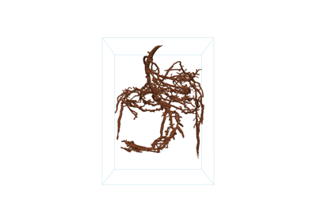
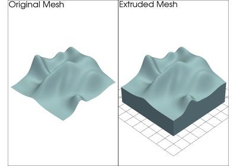
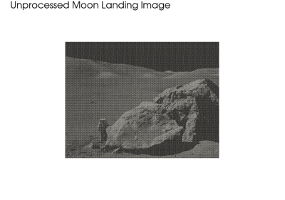
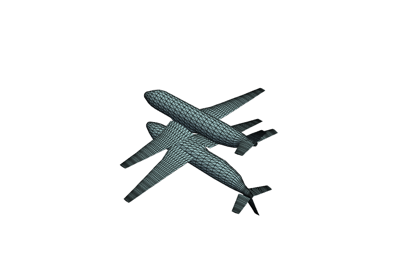
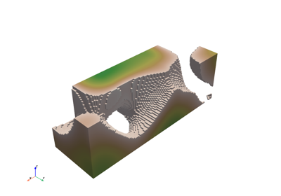
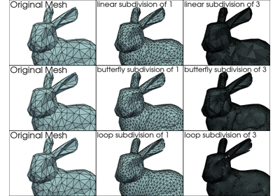
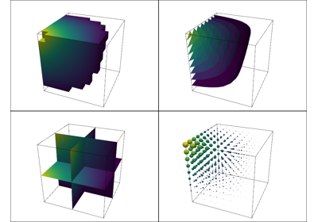
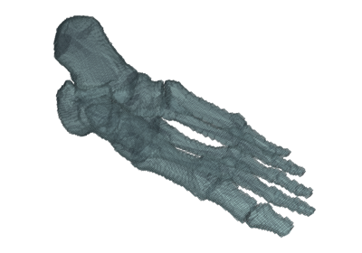

フィルタリング#
これらの例は フィルタ モジュールに存在する様々なメッシュ解析とフィルタリングルーチンの事例を示します．次のようなタスクを実行するには，これらのデモを参照してください．
メッシュのスライスとカット
ボリューム，領域，サーフェス法線などのメッシュプロパティの計算
メッシュ間引き
別のメッシュのサーフェスを使用して1つのメッシュの領域を抽出します
サーフェスメッシュを使用したレイトレーシング
メッシュ間のスカラー/ベクトル値のリサンプリングと補間
ベクトルフィールドを積分して，流線を生成します．
サーフェスをスムージングする



Connectivity



Extrude Trim



Fast Fourier Transform



Reflect Meshes



Sample Function: Perlin Noise in 3D



Subdivide Cells



Using Common Filters

Voxelize a Surface Mesh